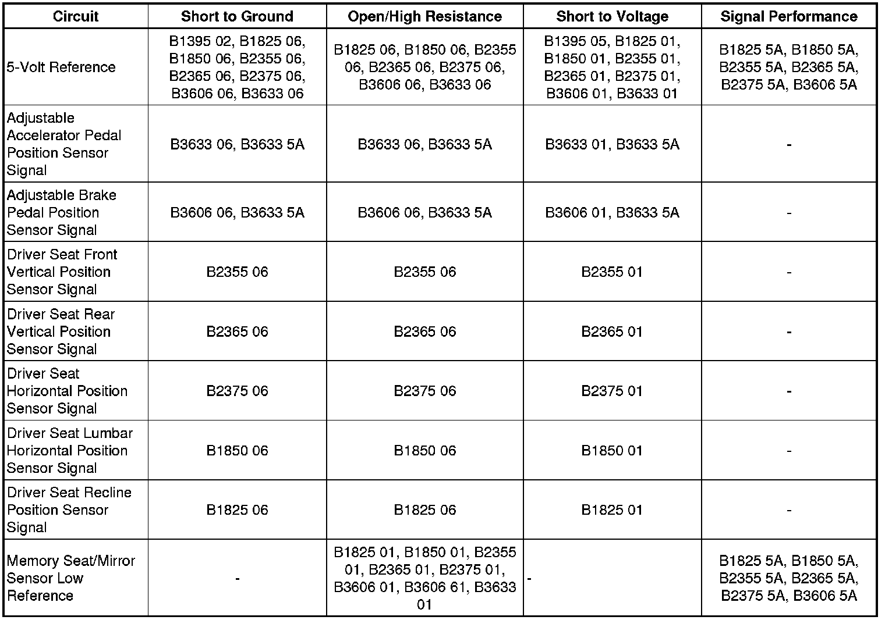

Memory Seat Module
DTC B1395 (Memory Seat Module)
Diagnostic Instructions
* Perform the Diagnostic System Check - Vehicle (Initial Inspection and Diagnostic Overview) prior to using this diagnostic procedure.
* Review Strategy Based Diagnosis (Initial Inspection and Diagnostic Overview) for an overview of the diagnostic approach.
* Diagnostic Procedure Instructions (Initial Inspection and Diagnostic Overview)provides an overview of each diagnostic category.
DTC Descriptors
DTC B1395 02
- Device Voltage Reference Output Circuit Short to Ground
DTC B1395 05
- Device Voltage Reference Output Circuit Short to Battery or Open
Diagnostic Fault Information

Circuit/System Description
The memory seat module (MSM) supplies a 5-volt reference voltage to the driver seat horizontal, front vertical, rear vertical, recline, lumbar position sensors and both adjustable pedals position sensors. The MSM monitors this reference voltage to ensure the accuracy of the voltages being returned from the sensors. If the voltage exceeds the normal operating range, errors will occur in the memory recall operations of the seat and adjustable pedals.
Conditions for Running the DTC
The MSM must be powered.
Conditions for Setting the DTC
B1395 02
The reference voltage drops below 4.8 volts for more than 300 mS.
B1395 05
The reference voltage exceeds 5.2 volts for more than 300 mS.
Action Taken When the DTC Sets
* All memory seat recall functions will be disabled.
* All memory and manual adjustable pedals functions will be disabled.
Conditions for Clearing the DTC
* The current DTC will clear and set the code to history, 3 seconds after the reference voltage returns to the normal operating range and the ignition is cycled OFF then back to ACC or RUN.
* The history DTC will clear after 50 consecutive fault-free ignition cycles have occurred.
Diagnostic Aids
* The Memory Seat Module (MSM) may be referenced as the Driver Position Module.
* All position sensors use common ground and 5-volt reference circuits.
* If the 5-volt reference circuit is shorted to voltage multiple position sensor codes will set.
* If the 5-volt reference circuit is shorted to ground multiple position sensor codes will set.
* A short to voltage on one of the position sensor signal circuits may set this DTC.
* An internal short to ground in one of the position sensors may set this DTC.
Reference Information
Schematic Reference
Rear Seat Schematics (Rear Seat Schematics)
Adjustable Pedal Schematics ([1][2]Electrical Diagrams)
Connector End View Reference
Component Connector End Views (Connector Views)
Description and Operation
Memory Seats Description and Operation (Memory Seats Description and Operation)
Electrical Information Reference
* Circuit Testing (Component Tests and General Diagnostics)
* Connector Repairs (Component Tests and General Diagnostics)
* Testing for Intermittent Conditions and Poor Connections (Component Tests and General Diagnostics)
* Wiring Repairs (Component Tests and General Diagnostics)
Scan Tool Reference
Control Module References (Programming and Relearning)
Circuit/System Testing
1. Ignition OFF, disconnect the harness connector at any one of the seat, lumbar, or adjustable pedals position sensors.
2. Ignition ON, test for 4.8-5.2 volts between the 5-volt reference circuit and ground.
• If less than the specified range, test the 5-volt reference circuit for a short to ground or an open/high resistance. If the circuit tests normal, replace the MSM.
• If greater than the specified range, test the circuits listed below for a short to voltage. If all circuits test normal, replace the MSM.
* 5-volt reference circuit
* The seat, lumbar, and adjustable pedal position sensor signal circuits
Repair Instructions
Perform the Diagnostic Repair Verification (Verification Tests) after completing the diagnostic procedure.
Control Module References (Programming and Relearning)for MSM replacement, setup, and programming